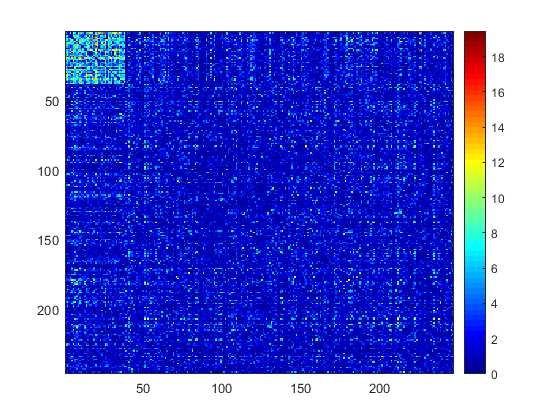

Contents
% Compare extracted subgraphs by greedy and adaptive greedy on Schizophrenia data % Extracted subgraphs are further refined to bipartite by Pard % Lambda in adaptive greedy is selected by itegrated likelihood
Print the raw data and do permutation
load('/Users/qwu/Downloads/Don/dense/W1_correct.mat') figure;imagesc(W1);colormap jet;colorbar;snapnow; n=size(W1,1); perm_matrix = squareform(1:(n*(n-1)/2)); node_perm_idx = randperm(n); perm_matrix = perm_matrix(node_perm_idx,node_perm_idx); perm_vec = squareform(perm_matrix); [result ID]=sort(perm_vec); nlogp_vec = squareform(W1); nlogp1_vec = nlogp_vec(perm_vec); nlogp1 = squareform(nlogp1_vec); figure;imagesc(nlogp1);colormap jet;colorbar;snapnow

Use one step greedy_ad with parameter 1
W=nlogp1;
[inlist2 outlist2]=greedy_ad(W,0.05,1);
W_return2 = W([inlist2 outlist2],[inlist2 outlist2]);
figure;imagesc(W_return2);colormap jet;colorbar;
Select lambda via integrated likelihood for binarized data with varied cutoff
then use greedy_ad and kpartite
rpmf = [0.2 0.3 0.3 0.2]; r=[0.025 0.01 0.005 0.001]; p0=0.05; lambda0=0.8:0.05:1.6; [inlist2 outlist2 max_lambda] = greedy_ad_blik(nlogp1,lambda0, r, rpmf, p0); size(inlist2) W_return2 = nlogp1([inlist2 outlist2],[inlist2 outlist2]); figure;imagesc(W_return2);colormap jet;colorbar; W_in2 = nlogp1(inlist2 ,inlist2); [Cindx_kpar,CID_kpar,Clist_kpar,T]=kpartite(squareform(W_in2),0.01,0,10); figure;imagesc(W_in2(Clist_kpar,Clist_kpar));colormap jet;colorbar; W_return2(1:size(inlist2,2),1:size(inlist2,2))=W_in2(Clist_kpar,Clist_kpar); figure;imagesc(W_return2);colormap jet;colorbar;
ans =
1 50
